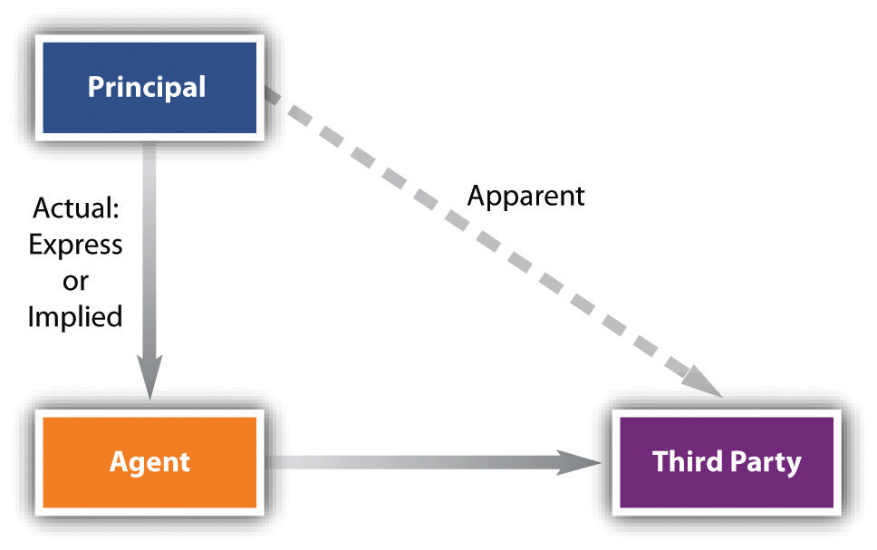

The key to determining whether a principal is liable for contracts made by his agent is authority: was the agent authorized to negotiate the agreement and close the deal? Obviously, it would not be sensible to hold a contractor liable to pay for a whole load of lumber merely because a stranger wandered into the lumberyard saying, “I’m an agent for ABC Contractors; charge this to their account.” To be liable, the principal must have authorized the agent in some manner to act in his behalf, and that authorization must be communicated to the third party by the principal.
There are three types of authority: express, implied, and apparent (see Figure 21.1 "Types of Authority"). We will consider each in turn.
The strongest form of authority is that which is expressly granted, often in written form. The principal consents to the agent’s actions, and the third party may then rely on the document attesting to the agent’s authority to deal on behalf of the principal. One common form of express authorityContractually given authority to the agent from the principal, orally or in writing, communicated to the third party. is the standard signature card on file with banks allowing corporate agents to write checks on the company’s credit. The principal bears the risk of any wrongful action of his agent, as demonstrated in Allen A. Funt Productions, Inc. v. Chemical Bank.Allen A. Funt Productions, Inc. v. Chemical Bank, 405 N.Y.S.2d 94 (1978). Allen A. Funt submitted to his bank through his production company various certificates permitting his accountant to use the company’s checking accounts.Allen Funt (1914–99) was an American television producer, director, and writer, best known as the creator and host of Candid Camera from the 1940s to 1980s, which was broadcast as either a regular show or a series of specials. Its most notable run was from 1960 to 1967 on CBS. In fact, for several years the accountant embezzled money from the company by writing checks to himself and depositing them in his own account. The company sued its bank, charging it with negligence, apparently for failing to monitor the amount of money taken by the accountant. But the court dismissed the negligence complaint, citing a state statute based on the common-law agency principle that a third party is entitled to rely on the express authorization given to an agent; in this case, the accountant drew checks on the account within the monetary limits contained in the signature cards on file with the bank. Letters of introduction and work orders are other types of express authority.
Figure 21.1 Types of Authority
Not every detail of an agent’s work can be spelled out. It is impossible to delineate step-by-step the duties of a general agent; at best, a principal can set forth only the general nature of the duties that the agent is to perform. Even a special agent’s duties are difficult to describe in such detail as to leave him without discretion. If express authority were the only valid kind, there would be no efficient way to use an agent, both because the effort to describe the duties would be too great and because the third party would be reluctant to deal with him.
But the law permits authority to be “implied” by the relationship of the parties, the nature and customs of the business, the circumstances surrounding the act in question, the wording of the agency contract, and the knowledge that the agent has of facts relevant to the assignment. The general rule is that the agent has implied or “incidental” authority to perform acts incidental to or reasonably necessary to carrying out the transaction. Thus if a principal instructs her agent to “deposit a check in the bank today,” the agent has authority to drive to the bank unless the principal specifically prohibits the agent from doing so.
The theory of implied authorityThe authority of an agent to perform acts that are reasonably necessary to accomplish the purpose of the agency. is especially important to business in the realm of the business manager, who may be charged with running the entire business operation or only a small part of it. In either event, the business manager has a relatively large domain of implied authority. He can buy goods and services; hire, supervise, and fire employees; sell or junk inventory; take in receipts and pay debts; and in general, direct the ordinary operations of the business. The full extent of the manager’s authority depends on the circumstances—what is customary in the particular industry, in the particular business, and among the individuals directly concerned.
On the other hand, a manager does not have implicit authority to undertake unusual or extraordinary actions on behalf of his principal. In the absence of express permission, an agent may not sell part of the business, start a new business, change the nature of the business, incur debt (unless borrowing is integral to the business, as in banking, for example), or move the business premises. For example, the owner of a hotel appoints Andy manager; Andy decides to rename the hotel and commissions an artist to prepare a new logo for the hotel’s stationery. Andy has no implied authority to change the name or to commission the artist, though he does have implied authority to engage a printer to replenish the stationery supply—and possibly to make some design changes in the letterhead.
Even when there is no implied authority, in an emergency the agent may act in ways that would in the normal course require specific permission from the principal. If unforeseen circumstances arise and it is impracticable to communicate with the principal to find out what his wishes would be, the agent may do what is reasonably necessary in order to prevent substantial loss to his principal. During World War II, Eastern Wine Corporation marketed champagne in a bottle with a diagonal red stripe that infringed the trademark of a French producer. The French company had granted licenses to an American importer to market its champagne in the United States. The contract between producer and importer required the latter to notify the French company whenever a competitor appeared to be infringing its rights and to recommend steps by which the company could stop the infringement. The authority to institute suit was not expressly conferred, and ordinarily the right to do so would not be inferred. Because France was under German occupation, however, the importer was unable to communicate with the producer, its principal. The court held that the importer could file suit to enjoin Eastern Wine from continuing to display the infringing red diagonal stripe, since legal action was “essential to the preservation of the principal’s property.”G. H. Mumm Champagne v. Eastern Wine Corp., 52 F.Supp. 167 (S.D.N.Y. 1943).
The rule that a person’s position can carry with it implied authority is fundamental to American business practice. But outside the United States this rule is not applicable, and the business executive traveling abroad should be aware that in civil-law countries it is customary to present proof of authority to transact corporate business—usually in the form of a power of attorney. This is not always an easy task. Not only must the power of the traveling executive be shown but the right of the corporate officer back in the United States to delegate authority must also be proven.
In the agency relationship, the agent’s actions in dealing with third parties will affect the legal rights of the principal. What the third party knows about the agency agreement is irrelevant to the agent’s legal authority to act. That authority runs from principal to agent. As long as an agent has authorization, either express or implied, she may bind the principal legally. Thus the seller of a house may be ignorant of the buyer’s true identity; the person he supposes to be the prospective purchaser might be the agent of an undisclosed principal. Nevertheless, if the agent is authorized to make the purchase, the seller’s ignorance is not a ground for either seller or principal to void the deal.
But if a person has no authority to act as an agent, or an agent has no authority to act in a particular way, is the principal free from all consequences? The answer depends on whether or not the agent has apparent authorityIn agency, the situation in which a principal leads a third party to believe that an agent has authority to bind the principal, even where the agent lacks the actual authority to bind the principal.—that is, on whether or not the third person reasonably believes from the principal’s words, written or spoken, or from his conduct that he has in fact consented to the agent’s actions. Apparent authority is a manifestation of authority communicated to the third person; it runs from principal to third party, not to the agent.
Apparent authority is sometimes said to be based on the principle of estoppel. Estoppel is the doctrine that a person will not now be allowed to deny a promise or assertion she previously made where there has been detrimental reliance on that promise or assertion. Estoppel is commonly used to avoid injustice. It may be a substitute for the requirement of consideration in contract (making the promise of a gift enforceable where the donee has relied upon the promise), and it is sometimes available to circumvent the requirement of a writing under the Statute of Frauds.
Apparent authority can arise from prior business transactions. On July 10, Meggs sold to Buyer his business, the right to use the trade name Rose City Sheet Metal Works, and a list of suppliers he had used. Three days later, Buyer began ordering supplies from Central Supply Company, which was on Meggs’s list but with which Meggs had last dealt four years before. On September 3, Central received a letter from Meggs notifying it of Meggs’s sale of the business to Buyer. Buyer failed to pay Central, which sued Meggs. The court held that Rose City Sheet Metal Works had apparent authority to buy on Meggs’s credit; Meggs was liable for supplies purchased between July 10 and September 3.Meggs v. Central Supply Co., 307 N.E.2d 288 (Ind. App. 1974). In such cases, and in cases involving the firing of a general manager, actual notice should be given promptly to all customers. See the discussion of Kanavos v. Hancock Bank & Trust Company in Section 21.4.1 "Implied Authority".
Even if the agent possessed no actual authority and there was no apparent authority on which the third person could rely, the principal may still be liable if he ratifies or adopts the agent’s acts before the third person withdraws from the contract. Ratification usually relates back to the time of the undertaking, creating authority after the fact as though it had been established initially. Ratification is a voluntary act by the principal. Faced with the results of action purportedly done on his behalf but without authorization and through no fault of his own, he may affirm or disavow them as he chooses. To ratify, the principal may tell the parties concerned or by his conduct manifest that he is willing to accept the results as though the act were authorized. Or by his silence he may find under certain circumstances that he has ratified. Note that ratification does not require the usual consideration of contract law. The principal need be promised nothing extra for his decision to affirm to be binding on him. Nor does ratification depend on the position of the third party; for example, a loss stemming from his reliance on the agent’s representations is not required. In most situations, ratification leaves the parties where they expected to be, correcting the agent’s errors harmlessly and giving each party what was expected.
The principal is liable on an agent’s contract only if the agent was authorized by the principal to make the contract. Such authority is express, implied, or apparent. Express means made in words, orally or in writing; implied means the agent has authority to perform acts incidental to or reasonably necessary to carrying out the transaction for which she has express authority. Apparent authority arises where the principal gives the third party reason to believe that the agent had authority. The reasonableness of the third party’s belief is based on all the circumstances—all the facts. Even if the agent has no authority, the principal may, after the fact, ratify the contract made by the agent.